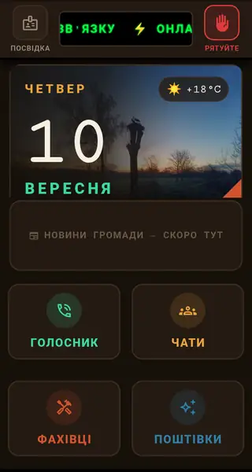

Головний екран
Ваш теплий і надійний цифровий дім
- Ми створили цей дизайн із безмежною любов’ю та глибоким розумінням, щоб кожна деталь була по-справжньому крутою, зручною та життєво необхідною для вас щодня.
- Головний екран об’єднує все найважливіше на відстані одного дотику: сповіщення про повітряні тривоги, найсвіжіші новини громади та щоденні надихаючі фото нашої незламної України.
Захист, турбота та зв’язок за будь-яких умов
- Швидка допомога та блекаути: кнопка порятунку допоможе миттєво покликати на допомогу рідних і друзів, а зв’язок працюватиме навіть у найскладніших умовах повного блекауту, дозволяючи говорити з близькими та обговорювати новини в чаті району.
- Турбота про рідних і побут: ми подбали про те, щоб ви ніколи не забули привітати близьких зі святами, а в разі потреби в будь-яких послугах достатньо натиснути лише одну кнопку — і перевірений майстер чи лікар уже поруч із вами.